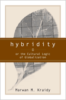

<body bgcolor="#FFFFFF" text="#000000" link="#0000FF" vlink="#CC0000" alink="#CC0000"><center><hr width="350" size="1" align="center" noshade>A guide to understanding hybridity&#151the interaction of cultures<hr width="350" size="1" align="center" noshade><p><a href="https://cdcshoppingcart.uchicago.edu/Cart/ChicagoBook.aspx?ISBN=9781592131433&&PRESS=temple" target="_top">Buy this book!</a> | <a href="https://cdcshoppingcart.uchicago.edu/Cart/Cart.aspx?PRESS=temple" target="_top">View Cart</a> | <a href="https://cdcshoppingcart.uchicago.edu/Cart/Cart.aspx?PRESS=temple" target="_top">Check Out</a></p><p></p></center><!--none//--><h1>Hybridity, or the Cultural Logic of Globalization</h1>
<h3>Marwan M. Kraidy</h3>
<P>cloth 1-59213-143-3 $70.50, Jun 05, <FONT COLOR=#990033>Available</FONT>
<br>paper 1-59213-144-1 $29.95, Jun 05, <FONT COLOR=#990033>Available</FONT>
<br>Electronic Book 1-59213-145-X $29.95 <FONT COLOR=#990033>Available</FONT>
<BR> 240 pp
6x9
1&nbsp;table
</P><BLOCKQUOTE><I>"This critical and wide-ranging study journeys into the sprawling worlds of hybridity and opens new avenues such as 'critical transculturalism'."</i>
<br>&#151<b>Jan Nederveen Pieterse</b>, Sociology, University of Illinois Urbana-Champaign<i></I></BLOCKQUOTE>
<p>The intermingling of people and media from different cultures is a communication-based phenomenon known as hybridity. Drawing on original research from Lebanon to Mexico and analyzing the use of the term in cultural and postcolonial studies (as well as the popular and business media), Marwan Kraidy offers readers a history of the idea and a set of prescriptions for its future use.
<p>Kraidy analyzes the use of the concept of cultural mixture from the first century A.D. to its present application in the academy and the commercial press. The book's case studies build an argument for understanding the importance of the dynamics of communication, uneven power relationships, and political economy as well as culture, in situations of hybridity. Kraidy suggests a new framework he developed to study cultural mixture&#151called critical transculturalism&#151which uses hybridity as its core concept, but in addition, provides a practical method for examining how media and communication work in international contexts.
<BR>&nbsp;<h2>Excerpt</h2><P>Excerpt available at <a href="http://www.temple.edu/tempress">www.temple.edu/tempress</a></p>
<BR>&nbsp;<h2>Reviews</h2>
<p><i>"</i>Hybridity<i> addresses the competing analytical issues raised by the various senses in which hybridity and related metaphors have been used conceptually in globalization, cultural, and media studies discourses. Kraidy seeks to distinguish corporate from critical transculturalism and to argue for the merits of critical versions of transculturalism. I know of no other work which addresses these issues with Kraidy's sweep, or seeks to trace the historical utilization of hybridity as a sociological metaphor. This book will be a very valuable and lucid addition to contemporary debates."</i>
<br>&#151<b>John Downing</b>, Director, Global Media Research Center, College of Mass Communication and Media Arts, Southern Illinois University at Carbondale
<p><i>"Marwan Kraidy does an incredible job of pulling together and synthesizing a tremendous volume of literature that crosses multiple disciplines. By deftly laying out various discussions about hybridity, Kraidy is able to place his own view into the terrain. His contribution makes important connections between `political economy' and 'cultural studies.' This is a very useful book for anyone interested in the landscape of hybridity."</i>
<br>&#151<b>Thomas Nakayama</b>, Hugh Downs School of Human Communication, Arizona State University
<p><i>"The book logically progresses through a series of theoretical arguments and supporting rationale to arrive at a body of work that deserves our time and attention.... While the author focuses on media and globalization, this reviewer is struck by the applications of this sociocultural study in other aspects of human learning as well."</i>
<br>&#151;<b><i>Multicultural Review</i></b>
<p><i>"[Kraidy] presents an original and engaging text on the complex concept of hybridity that provides the best analyses of the literature on the concept, competing conceptions and debates, and ways that it functions in different discourses and theories."</i><br>&#151;<b><i>
The International Journal of Communication</i></b>
<BR>&nbsp;<P><p>&nbsp;&nbsp;<font color="#3152A5">Also available in e-book</font></p></P><BR>&nbsp;<br>
<h2>Contents</h2><P>
<p>Preface
<br>Acknowledgments
<br>1. Cultural Hybridity and International Communication
<br>2. Scenarios of Global Culture
<br>3. The Trails and Tales of Hybridity
<br>4. Corporate Transculturalism
<br>5. The Cultural and Political Economies of Hybrid Media Texts
<br>6. Structure, Reception, and Identity: On Arab-Western Dialogism
<br>7. Hybridity without Guarantees: Toward Critical Transculturalism
<br>Notes
<br>Bibliography
<br>Index
</P><BR>&nbsp;<H2>About the Author(s)</H2>
<P><b>Marwan M. Kraidy</b> is Assistant Professor of International Communication at the School of International Service, American University. He is co-editor of <i>Global Media Studies: Ethnographic Perspectives</i>.</P>
<BR><H2>Subject Categories</H2>
<p><A HREF="/tempress/mass_media.html" TARGET="_top">Mass Media and Communications</a>
<BR><A HREF="/tempress/cultural.html" TARGET="_top">Cultural Studies</a>
<BR><A HREF="/tempress/sociology.html" TARGET="_top">Sociology</a>
</p>
<p align="center"><a href="https://cdcshoppingcart.uchicago.edu/Cart/ChicagoBook.aspx?ISBN=9781592131433&&PRESS=temple" target="_top">Buy this book!</a> | <a href="https://cdcshoppingcart.uchicago.edu/Cart/Cart.aspx?PRESS=temple" target="_top">View Cart</a> | <a href="https://cdcshoppingcart.uchicago.edu/Cart/Cart.aspx?PRESS=temple" target="_top">Check Out</a></p><p><font face="Arial" size="1"><a href="copyright.html" onMouseOver="window.status='Web Copyright Policy';return true;" onMouseOut="window.status=''" title="Web Copyright Policy">&copy;</a> 2015 <a href="http://www.temple.edu" target="new" onMouseOver="window.status='Link to Temple University home page';return true;" onMouseOut="window.status=''" title="Link to Temple University home page">Temple University</a>. All Rights Reserved. http://www.temple.edu/tempress/titles/1770_reg.html</font></p>